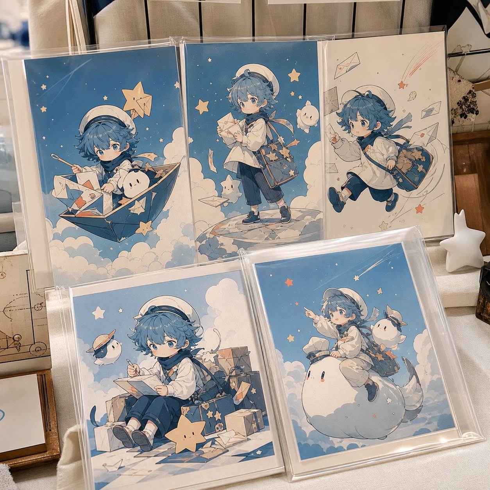
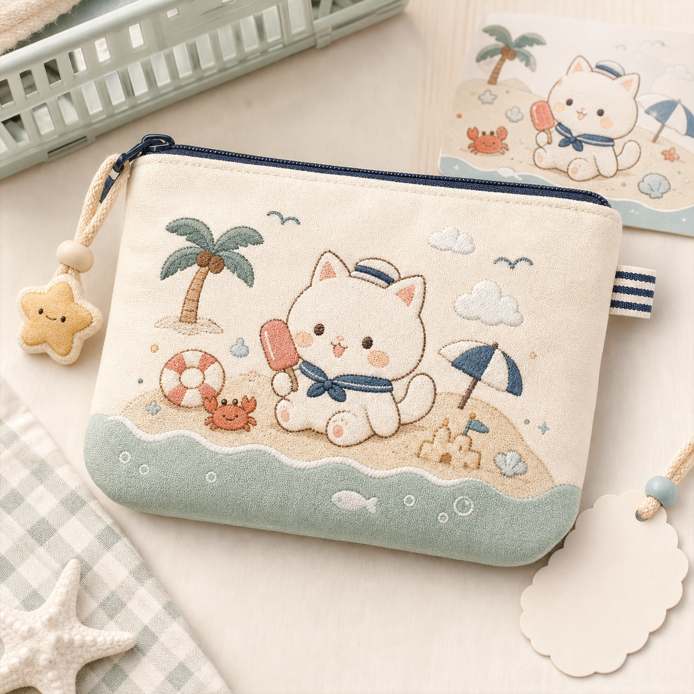
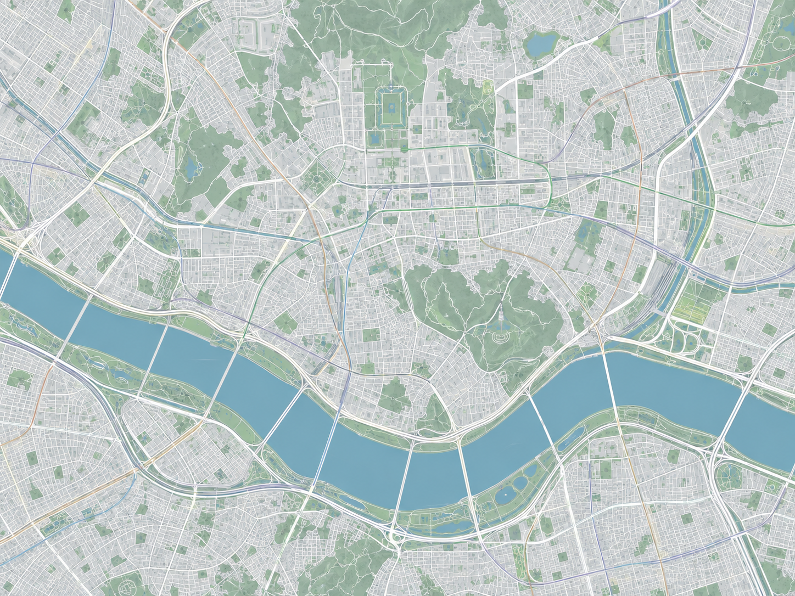

어떻게 찾을까요?
목적부터 고르면 탐색 시간이 줄어듭니다.
지금 많이 보는 행사
서브컬처 8개 행사가 공개되어 있어요.
지역별로 보기
전체 지역언제, 어디로 갈지 먼저 정하세요
날짜와 지역을 선택하면 이동하기 좋은 순서로 행사를 정리합니다.
- 날짜 선택가능한 날을 고르기
- 행사 저장후보를 한곳에 모으기
- 동선 확인방문 순서를 정하기
조건에 맞는 행사
서브컬처 8개행사를 읽고 고르는 문화 가이드

이번 달, 놓치면 아쉬운 행사
어떤 하루를 원하세요?
서브컬처 8개 행사가 공개되어 있어요.
날짜가 정해졌다면
행사 정보를 짧게 비교하고 관심 일정을 보관하세요.
가까운 행사부터
바로 찾아보세요
지역을 고르면 이동하기 편한 순서로 행사와 장소를 보여드립니다.

선택한 행사
장소를 확인한 뒤 일정에 저장할 수 있습니다.
제35회 디. 페스타 (토요일)10.03 토 | SETEC | 서울